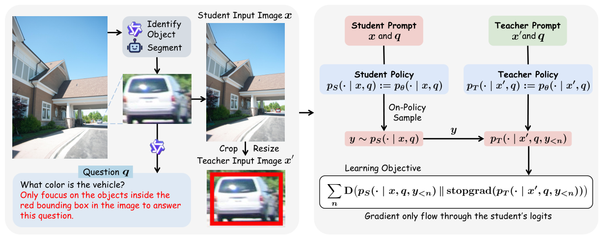
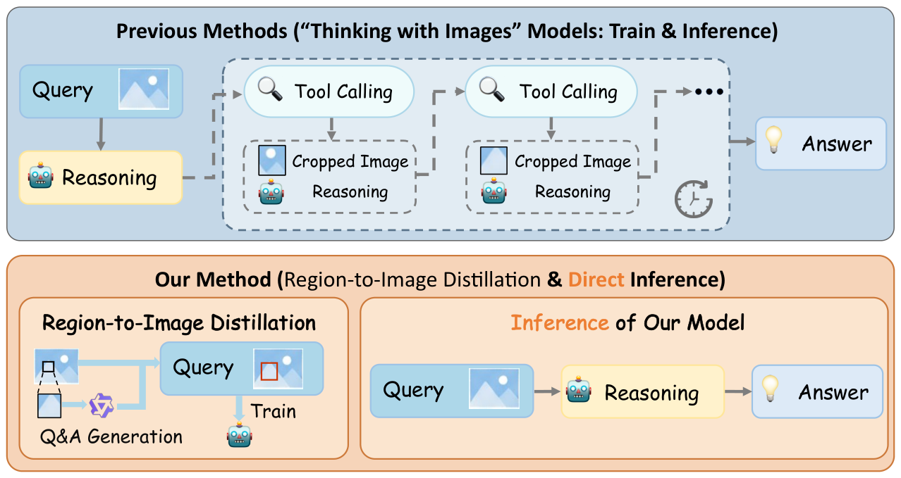

Paper Reading
已读论文的中英对照批注与论证分析。
-

Vision-OPD: Learning to See Fine Details for Multimodal LLMs via On-Policy Self-Distillation
让多模态模型从局部裁剪中学习，在看整张图时也能识别细节。
-

Zooming without Zooming: Region-to-Image Distillation for Fine-Grained Multimodal Perception
将局部放大图中的视觉知识蒸馏到整图输入，减少推理时的裁剪与重复编码。
没有匹配的论文。试试更短的关键词。